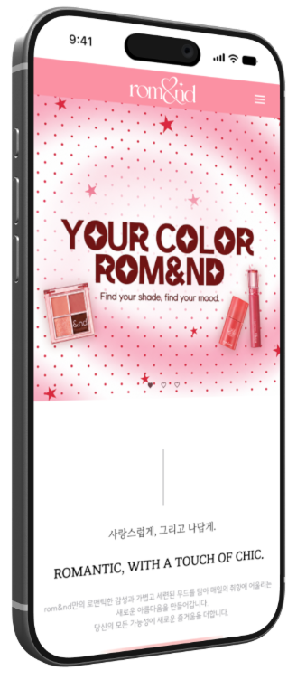
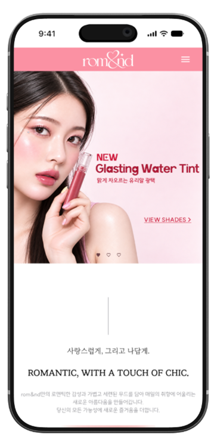
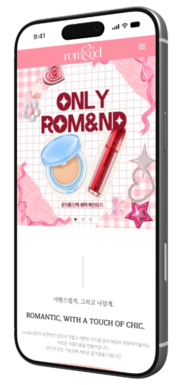

02 / TEAM PROJECT
ROM&ND
브랜드의 무드는 그대로,
제품 탐색은 더 명확하게.
롬앤의 브랜드 아이덴티티를 유지하면서, 제품을 찾고 비교하고 구매하는 흐름을 재구성한 웹 리디자인 프로젝트입니다.
웹사이트가 천천히 스크롤됩니다. 마우스를 올리면 멈춥니다.
Project Overview
롬앤 브랜드의 기존 웹사이트를 분석하고 제품 탐색 흐름을 중심으로 화면 구성을 재설계했습니다. 제품 탐색에서 구매까지 이어지는 과정을 정리하고, 사용자를 중심으로 와이어프레임을 설계한 뒤 Figma로 UI를 제작했습니다. 이후 HTML, CSS, JavaScript로 반응형 웹사이트를 구현했습니다.
Responsive Screens


